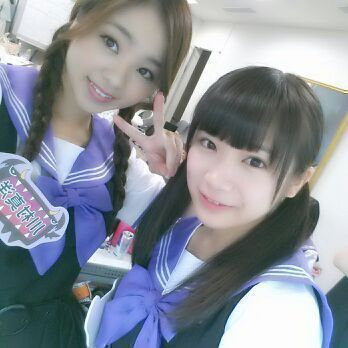
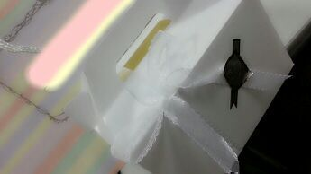

皆さん今日もお疲れ様です(о´∀`о)
ろってぃ-で-す☆

今日は朝から お仕事で、
今になってやっと
落ち着いたって感じです(*´▽`*)/
写真を見て頂いたら分かるように、
そうっ、、今日は「NOGIBINGO」の
収録でしたよ ！！
やっぱり NOGIBINGOのお仕事は
本当に楽しいです(о´∀`о)
オンエア見てねんねん♪
ぴょん。
そしてそしてっ、
まいやん に 真夏 お誕生日
おめでとぉさん )))
あ、真夏との写真撮ったのに
まいやんと撮れてないやん (T-T)
うえーん。
まいやんは 美し過ぎてる。
大好き。
よく,ちょっかい
かけてきたり かけたり
この前もリハーサル中後ろから
いたずらしてきた=´▽`=
まぃやんと絡むと
すぎょい楽ちぃから好き。あーはん。
真夏は、かしこい女子だよ♪
ずっと一緒におんのに
不思議な部分がまだある〜 \(・ω・)/
もっと 真夏のこと知りたーい あ-はん。
いつも優しくしてくれて
ありがとう。
まいやんも真夏も好きです。
これからもよろちくね。
幸せな１年にしてください＼(^o^)／
以上っ ろってぃ-でしたっ )))
ゆたんからのプレゼント☆ミ
